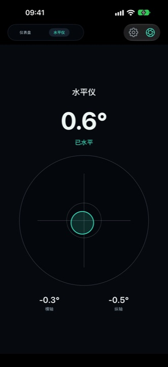
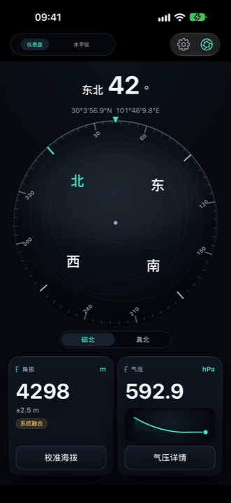
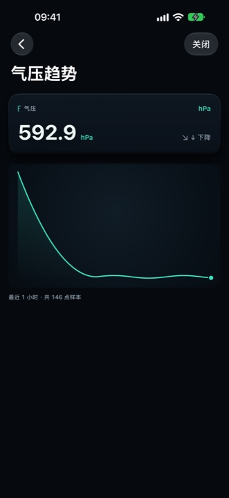

四个仪表，两页翻完
GPS 与气压海拔、一小时气压趋势、磁北与真北、双轴水平仪。两页就够，在海拔三千米不用挨个点标签找。
户外仪表 · iPhone
海拔、气压、指南针、水平仪，放在同一块仪表盘上。每个读数都标出误差范围和来源；传感器不可信时，App 直说，不编一个看起来专业的数字。
预发布 · iOS 17+ · 首个 TestFlight 版本准备中
无账号、无广告、无埋点


为什么只有四个读数
海拔决定你在哪，气压告诉你天气在变，方位让你不偏，水平仪让炉子和帐篷放平。PeakGo 把屏幕留给这四件事，不再多一层标签栏。
GPS 与气压海拔、一小时气压趋势、磁北与真北、双轴水平仪。两页就够，在海拔三千米不用挨个点标签找。
填一个确定高度，气压计就锚在它上面，而不是给你一个看起来很专业的数字。气压真实骤降时趋势会冻结，不被平均掉。
没有气压计或磁力计的机器上，卡片会说明缺什么、为什么；其余功能照常可用。不给假数字，也不给看起来像读数的占位符。
界面上有什么
读数在原地更新。单位跟着你走：米或英尺，hPa、inHg 或 mmHg，十进制度或度分秒。

它不做什么
PeakGo 是一件工具，不是一个服务。它不问你是谁，进去以后也没有东西要卖给你。
下载
PeakGo 目前是预发布。首个构建会通过 TestFlight 发出，真机实测之后再上 App Store。按钮先置灰——能点的下载按钮，等真有东西可装时再放出来。
iOS 17+ · iPhone · 上线后免费